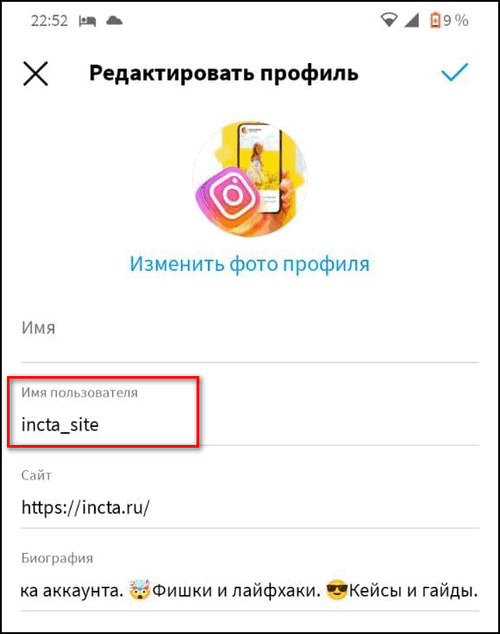
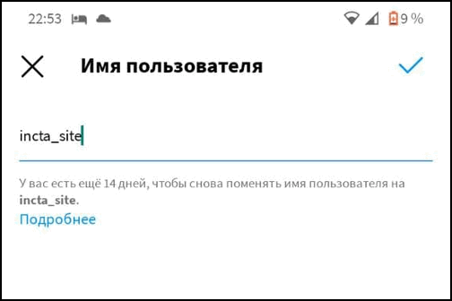
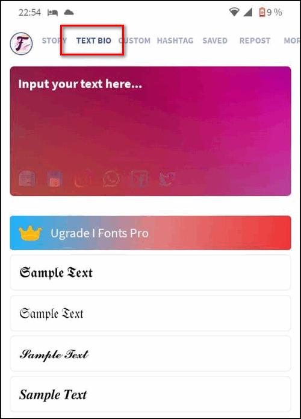
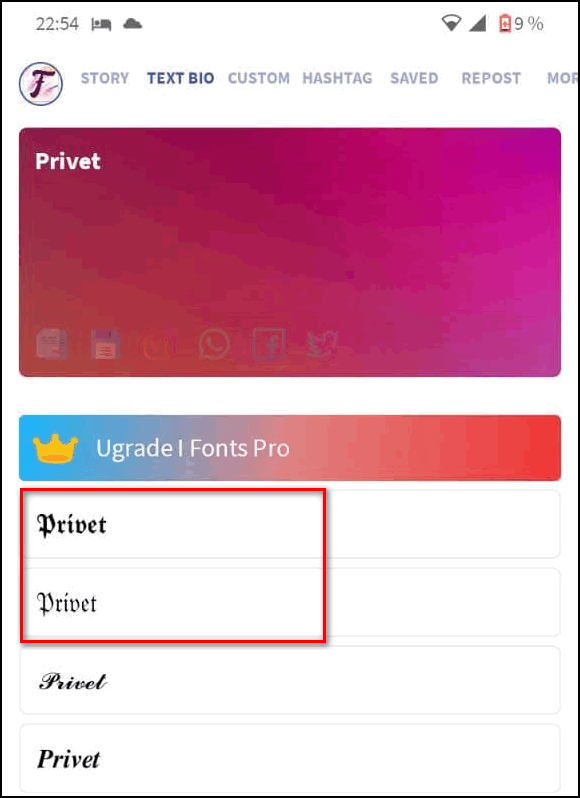

Как изменить ник и имя пользователя в Инстаграм

Изменить ник в Инстаграме* с телефона возможно через вкладку: «Редактировать профиль». В социальной сети есть ограничения по суткам, когда можно вернуть свой предыдущий никнейм.
Чем отличается никнейм и имя в Инстаграме*
В разделе «Редактировать профиль» пользователь увидит два пункта: «Имя» и «Никнейм». В первом можно указать любые символы, использовать русскую и английскую раскладку. Во втором же – только английские буквы, с минимальным количеством доступных символов.
| Название: | Имя/фамилия: | Никнейм: |
| Редактирование | Раз в 14 дней | Раз в месяц, в течение двух недель можно вернуть старый |
| Символы | Любые, включая смайлы | Нижнее подчеркивание, точка |
| На что влияет | Поиск пользователя по его данным | Является логином, используют в отметках, можно найти человека |
| Размер | До 30 символов | До 30 |
Можно изменить ник в Инстаграме*, но тогда при следующей авторизации, пользователю придется указывать новый логин. Никнейм также указан в адресной строке, с помощью которой другие смогут быстро перейти в профиль и посмотреть записи.
Как изменить никнейм с телефона
Чтобы поменять ник в Инстаграме* с мобильной версии, нужно перейти к редактированию. После регистрации доступно изменение на любой другой, без привязки ко времени. И при создании учетной записи пользователь может редактировать свой ник. Использовать наименование страницы, которые совпадает с другим аккаунтом – запрещено. Это уникальный идентификатор, поэтому выбирая комбинацию, нужно следить за рядом стоящим знаком «красный крестик». Как поменять на телефоне Андроид:
- Зайти в Инстаграм* – нажать по кнопке: «Мой аккаунт».

- «Редактировать профиль» рядом с описанием – Никнейм.
- Ввести новый ник – Сохранить.

С iOS механизм действий такой же:
- Зайти на Айфоне в Инстаграм* – нажать: «Редактировать профиль».
- Ввести ник – подтвердить и сохранить.
При совпадении с любым другим, система покажет значок, а изменения не будут сохранены. В этом случае, пользователь может добавить к комбинации нижнее подчеркивание, точку или цифру.
С компьютерной версии
Изменить имя пользователя в Инстаграме* можно и с компьютерной версии. Владельцу страницы нужно перейти в профиль с помощью веб-форма и воспользоваться тем же разделом.
Преимуществ для версий нет, кроме как при изменении «Имя и фамилия». В этом случае, пользователь может выбирать оригинальные шрифты, не устанавливая сторонних приложений на смартфон.
Как поменять:
- Зайти в Инстаграм* и авторизоваться с ПК-версии.
- Редактировать – Имя пользователя.
- Ввести новый никнейм – Сохранить.
Данные также будут изменены и на мобильной версии. Для веб-формата действуют те же правила: в следующий раз можно изменить только в течение 30 дней.
Редактируем имя и фамилию в Инстаграме*
Чтобы изменить фамилию в Инстаграме*, нужно открыть «Редактировать» и ввести свои данные. Причем, они могут не соответствовать реальным. Для владельцев бизнес-страниц это вариант, как указать наименование своего магазина/шоурума или позиционировать блог. Учитывая максимальное количество символов, нужно максимально емко продумать название. Как поменять:
- Редактировать профиль – Имя и фамилия.
- Ввести свои данные – Сохранить.
В отличие от никнейма, нет ничего страшного, чтобы имя совпадало с чьим-то. Помимо стандартных символов, владелец профиля может использовать нестандартные шрифты, смайлики. Вводить можно на русском и английском языках.
Необычные шрифты для имени
Чтобы сделать название страницы запоминающимся и интересным, пользователь может установить приложение для оригинальных шрифтов. ТОП-3 утилиты:
- Fontify;
- Fonts for Instagram*;
- I Fonts.
Они обладают примерно одинаковым списком шрифтов и функций: нужно установить, ввести нужное слово, выбрать шрифт и добавить в биографию. Сделать нестандартный шрифт с I Fonts:
- Зайти в Play Market – скачать и установить.
- Открыть – Start Create.

- Выбрать сверху: «Text Bio» - вписать название.
- Указать шрифт – сохранить на смартфон.

Далее, нужно перейти в Инстаграм* и выбрать: «Редактировать профиль». В раздел: «Имя и фамилия» нужно вставить новый текст.
Если символы пропали или не отображаются
Символы могут пропасть или не отображаться в двух случаях: если выбранный шрифт не поддерживается социальной сетью или пользователь не сохранил внесенные изменения. Что делать, если пропали символы:
- проверить раздел «Биография» с разных устройств;
- попробовать другие шрифты;
- перезапустить приложение.
Зачастую, проблема возникает именно с отображением шрифта на разных устройствах. Знаки, которые отображаются на iOS, могут быть невидны на Андроиде. И вместе текста появятся пустые квадраты, которые можно прочесть только с компьютерной версии.
Ошибки также проявляются при вводе курсивного текста. Поэтому, среди доступных вариантов лучше выбирать стандартные или с измененными размерами.
Почему Instagram* не дает изменить ник: новые правила 2022 года
В социальной сети, чтобы изменить имя, фамилию или никнейм, была введены новые правила. Они касаются сроков для редактирования. Если до 2021 года пользователи могли менять никнейм в любой время, то после введения новых требований в 2022 году – только раз в месяц. Второй правило касается срока восстановления – в течение 14 дней. За это время никто не может занять этот ник, а у первоначальный владелец может восстановить ранее выбранный вариант.
Если попытаться изменить никнейм до завершения месяца – кнопка «Готово» не будет доступна. Поэтому, пользователь должен внимательно подойти к выбору наименования профиля.